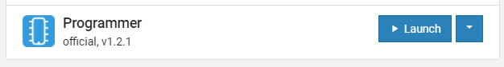
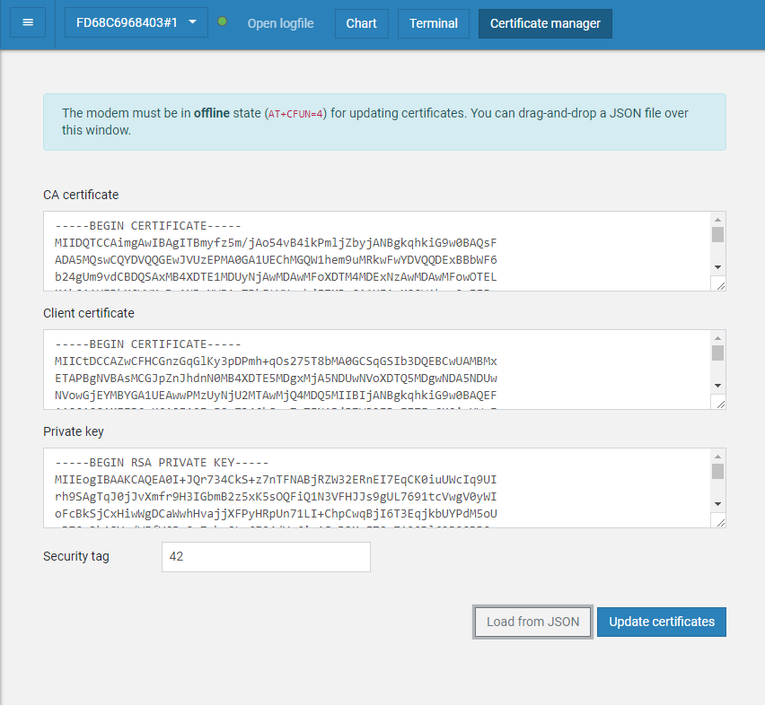

Provisioning the certificate¶
You need to generate and provision certificates to your device. Provisioning the certificates can be done in the following ways:
Using the CLI
Using nRF Connect for Desktop
Generating a certificate¶
You can use the CLI to generate a certificate for your device.
The firmware will use the IMEI of the device as the MQTT client ID.
You can get the IMEI of your device using the AT command AT+CGSN.
Following is the output of the command:
352656100248049 OK
Use the IMEI when generating the certificate:
node cli create-device-cert -d "<imei>"
Provisioning the certificate using CLI¶
Note
To provision the device certificate using CLI, you must have Segger JLink installed in your path.
Use the CLI to provision the device certificates:
node cli flash "<imei>"
Provisioning of the certificate using CLI also results in the following actions:
Downloading of the latest firmware from the Firmware releases GitHub page
Programming of the firmware to the device
Provisioning using nRF Connect for Desktop¶
You can use the certificates/device-<deviceId>.json file with Certificate Manager in LTE Link Monitor, which is an application implemented as part of nRF Connect for Desktop, to provision the certificate to the device.
Certificate Manager uses AT commands to write the certificate information to the secure storage of the modem and you need to program your device with a firmware that has the AT command host enabled.
To provision the certificate using LTE Link Monitor, complete the following steps:
Program the AT host using nRF Connect Programmer application (part of nRF Connect for Desktop).
nRF Connect for Desktop Programmer¶
For programming, use the following files:
Thingy:91 - thingy91_at_client_increased_buf.hex
nRF9160 DK - 91dk_at_client_increased_buf.hex
For instructions, see the following documentation:
Important
Make sure that the selected device is directly connected and not connected via the debugger.
Open nRF Connect for Desktop and launch the LTE Link Monitor application.

nRF Connect for Desktop LTE Link Monitor¶
Click Certificate Manager.
LTE Link Monitor Certificate Manager¶
Drag and drop the JSON file into the Certificate Manager window or select the JSON file using the Load from JSON option.
Note
Change the security tag to
42. The modem can hold multiple credentials, and the default security tag16842753is reserved for nRF Connect for Cloud credentials.Click Update certificates and wait until the operation finishes.